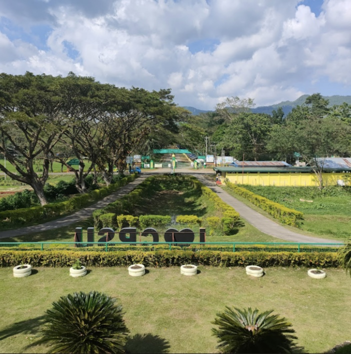
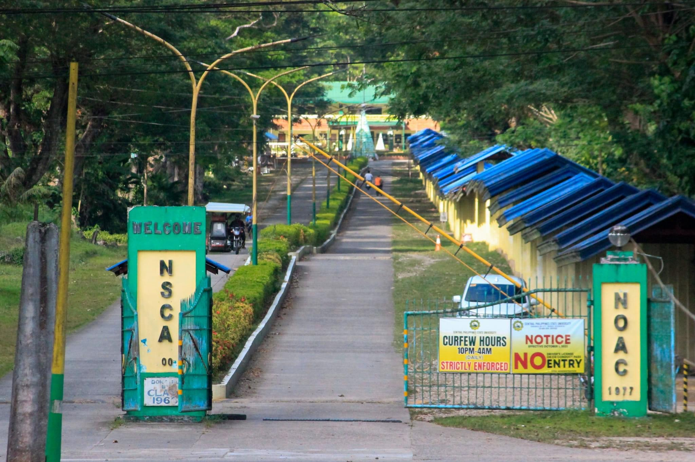

In Negros Occidental, Central Philippines State University (CPSU), which is proud to have ten campuses and Extension programs and is ISO-accredited, is a symbol of innovative education and community empowerment. This extensive network represents a dedication to quality and acts as a transforming link, bringing local communities closer to the actualization of their dreams. The commitment of CPSU to offering top-notch, cutting-edge higher education demonstrates a deep comprehension of the particular requirements of its surrounding regions. With a strong commitment to its original goals, CPSU is inspiring others as it transforms into a technology-driven, multidisciplinary institution by 2023. Within the colorful fabric of Negros Occidental, CPSU shows up as a driving force behind social advancement, inspiring aspirations and clearing the path for a time when education will be the primary
The Central Philippines State University, commonly abbreviated as CPSU, is a public university located in the Philippines. Its main campus is situated in Kabankalan, Negros Occidental, and it also has nine satellite campuses spread over the province's many towns and cities.
A public state institution in the Philippines, Central Philippines State institution (CPSU) was once known as Negros State College of Agriculture. Its main campus is situated in Negros Occidental, in Kabankalan. Originally known as Negros Occidental Agricultural School (NONAS), CPSU was renamed as the nation's first agricultural institution in 1946, during World War II, and founded by a Filipino superintendent by the name of Jose F. Crisanto. On September 6, 1977, the establishment was renamed Negros Occidental Agricultural College (NOAC) by virtue of Presidential Authority. Following that, NOAC was transformed into the Negros State College of Agriculture (NSCA), a state college.